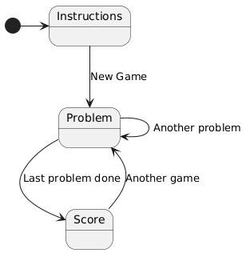

Instructions: Edit the HTML file (which contains Python code and Vue declarations) to create a quiz that tests the user on multiplication. It should:
Initially show a "new game" button with instructions
Once a new game has been started, it should show a multiplication problem (e.g. "8 x 7") and ask the user to enter their answer.
Feedback ("Right!" or "Wrong!") is given on the answer, and then it gives another problem.
After ten problems it shows an overall score (e.g. "You got 8 out of 10 right!") along with a "Another game?" button.
The following image shows the interaction as a state diagram:

Once you are done, you can extend the game in a number of ways (which require you to modify the Python code, not just add Vue declarations):
Add to the problem view an indication of the number of the problem (e.g. "This is problem 3 out of 10").
Instead of asking a multiplication problem, it could randomly ask either a multiplication, addition, or subtraction problem.
Instead of moving to the next problem regardless of whether the answer is correct, the program could only move to the next problem once a correct answer is given. In this case instead of counting how many answers were correct, it should count how many answers were wrong along the way.